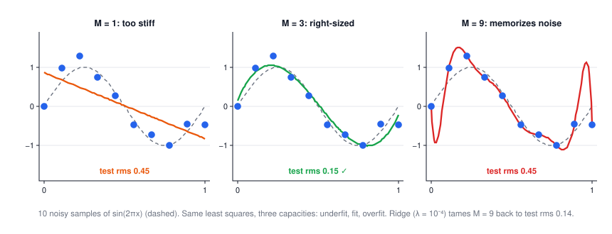
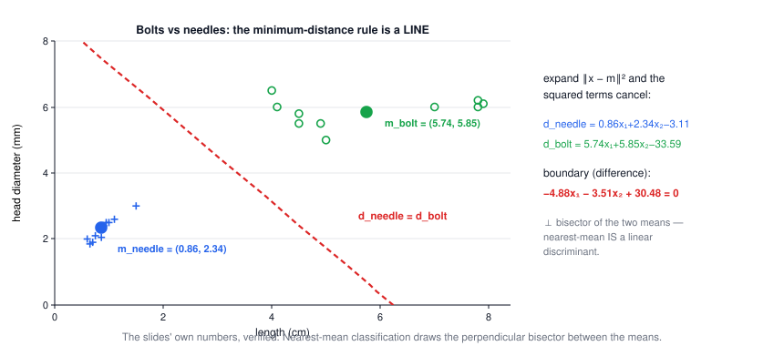
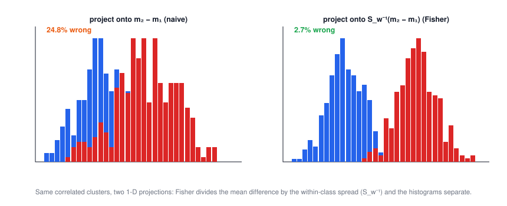

Lecture 11: Regression & Classification
CSE 276C, Lecture 11 · Prof. Henrik Christensen · Bishop PRML ch. 3–4. All numbers verified in
scripts/lec11/verify.py.- The loss function & what "best" means
- Linear basis function models
- Maximum likelihood = least squares
- Interlude: fitting lines to laser scans
- Sequential learning & regularization
- Bayesian linear regression
- Picking the model: Bayesian comparison
- Classification & discriminant functions
- Least squares as a classifier (and its sins)
- Fisher's discriminant
- The perceptron
- Summary
The big picture
Everything in this lecture is the same object — a linear model \(y = \mathbf w^\top \phi(\mathbf x)\) — asked three escalating questions: what's the best w? (least squares), how sure am I? (Bayesian), which side? (classification). The robotics pitch from slide 5: predict battery time, time-to-completion, where doors are — and classify what the sensors see.
| robotics problem | tool | section |
|---|---|---|
| battery time remaining from load history | basis-function regression | 2–3 |
| walls from laser scans | LSQ / total LSQ line fitting | 4 |
| calibration that improves while driving | sequential LMS | 5 |
| a grasp controller that knows its own uncertainty | Bayesian regression | 6 |
| bolts vs needles on the conveyor | discriminants, Fisher, perceptron | 8–11 |
1 · The loss function & what "best" means
$$E[L] = \iint \{y(\mathbf x) - t\}^2\, p(\mathbf x, t)\, d\mathbf x\, dt \;\;\Longrightarrow\;\; y^*(\mathbf x) = E[t \mid \mathbf x]$$Minimizing expected squared loss over all possible functions (a Lecture 9 variational argument!) gives the conditional mean: the ideal regressor averages the targets seen at each x. Splitting the loss shows \(E[L] = \int \{y - E[t|x]\}^2 p\,dx + \int \{E[t|x] - t\}^2 p\,dx\): the second term is the noise floor no model can beat — know it exists, so you stop tuning when you hit it.
2 · Linear basis function models
$$y(\mathbf x, \mathbf w) = \sum_{i=0}^{m} w_i\,\phi_i(\mathbf x) = \mathbf w^\top \phi(\mathbf x)$$| basis | formula | character |
|---|---|---|
| polynomial | \(\phi_i = x^i\) | global — one sample tugs the whole curve (Lecture 3's Vandermonde warning applies) |
| Gaussian | \(\phi_i = e^{-(x-\mu_i)^2/2s^2}\) | local bumps — RBF networks, kriging's cousins |
| sigmoid | \(\phi_i = \sigma\!\big(\tfrac{x-\mu_i}{s}\big)\) | soft steps — one layer short of a neural net |
Linear means linear in w, not in x — the model can be as curvy as the basis allows while the fitting stays one linear solve.
3 · Maximum likelihood = least squares
Assume Gaussian noise \(t = y(x, \mathbf w) + \epsilon\), \(\epsilon \sim N(0, \beta^{-1})\). The log-likelihood of the data is \(\tfrac N2\ln\beta - \tfrac N2 \ln 2\pi - \beta E_D(\mathbf w)\) with \(E_D = \tfrac12\sum_i \{t_i - \mathbf w^\top\phi(x_i)\}^2\) — so maximizing likelihood is minimizing squared error, and the optimum is the normal equations:
$$\mathbf w_{ML} = (\Phi^\top \Phi)^{-1} \Phi^\top \mathbf t, \qquad \Phi_{ij} = \phi_j(x_i)\ \text{(one row per sample, one column per basis)}$$
verify.py.🕹️ Try it: capacity slider vs regularization slider — watch train error lie to you:
4 · Interlude: fitting lines to laser scans
The slides ground this in a robot's laser scanner. Vertical-error LSQ (y = ax + b) fails on near-vertical walls — Lecture 2 / HW3's lesson. Alternatives, in increasing robot-worthiness:
| model | error minimized | solve |
|---|---|---|
| \(y = ax + b\) | vertical offsets | 2×2 normal equations |
| \(ax + by + c = 0,\ a^2{+}b^2{=}1\) | perpendicular distance (total LSQ) | eigenvector of the 2×2 scatter matrix — HW3's SVD plane fit in 2-D |
| \(r_i \cos(\phi_i - \theta) = \rho\) | range residuals in sensor coordinates | nonlinear LSQ; matches the scanner's actual noise, good for polishing Hough lines |
5 · Sequential learning & regularization
Streaming data? Update per sample (LMS — gradient descent on one term of E_D):
$$\mathbf w^{(\tau+1)} = \mathbf w^{(\tau)} + \eta\,\big(t_n - \mathbf w^{(\tau)\top}\phi(x_n)\big)\,\phi(x_n)$$Verified: with the + sign this converges to the true line to 10⁻¹⁰; with the − sign the slide prints, it diverges (see typos box). η trades speed against stability — the same step-size story as Lecture 7's integrators.
Against overfitting, penalize weight size (ridge):
$$E_D(\mathbf w) + \tfrac\lambda2 \mathbf w^\top \mathbf w \;\Rightarrow\; \mathbf w = (\lambda I + \Phi^\top\Phi)^{-1}\Phi^\top \mathbf t$$Verified: λ = 10⁻⁴ takes M = 9 from test rms 0.447 to 0.136 — Lecture 3's kriging regularizer and this are the same trick.
6 · Bayesian linear regression
Instead of one w, keep a distribution. Gaussian prior × Gaussian likelihood stays Gaussian:
$$p(\mathbf w) = N(0, \alpha^{-1}I) \;\Rightarrow\; p(\mathbf w \mid \mathbf t) = N(\mathbf m_N, S_N),\quad \mathbf m_N = \beta S_N \Phi^\top \mathbf t,\quad S_N^{-1} = \alpha I + \beta \Phi^\top \Phi$$| symbol | meaning |
|---|---|
| \(\alpha\) | prior precision — how strongly you believe "weights are small" before data (= λ/β of ridge: ridge is the Bayesian MAP in disguise) |
| \(\beta\) | noise precision (1/σ²) of the sensor |
| \(S_N\) | posterior covariance — the error bars on w, shrinking as ΦᵀΦ accumulates |
Bishop's running example, verified: truth (−0.3, 0.5), noise σ = 0.2. Posterior mean after 1 point: (0.21, 0.13) ± (0.40, 0.61) — barely better than the prior; after 2: (0.05, 0.38); after 20: (−0.28, 0.50) ± (0.05, 0.07).
🕹️ Try it: feed observations one at a time and watch the posterior blob collapse onto the truth:
7 · Picking the model: Bayesian comparison
$$p(M_i \mid D) \propto p(D \mid M_i)\,p(M_i), \qquad p(D \mid M_i) = \int p(D \mid \mathbf w, M_i)\,p(\mathbf w \mid M_i)\,d\mathbf w$$The evidence integrates the fit over every parameter value the model allows — so a flexible model that fits your data only in a tiny corner of its parameter space is penalized automatically: \(\ln p(D) \approx \ln p(D\mid w_{map}) + \ln(\sigma_{post}/\sigma_{prior})\), and that second term (the Occam factor) is negative in proportion to how much the data had to narrow the model down. Compare two models by the Bayes factor \(p(D|M_1)/p(D|M_2)\), or keep them all in a mixture. This is cross-validation's principled sibling: it picks M ≈ 3 for Fig 1's data without ever holding data out.
8 · Classification & discriminant functions
Now the target is a class. The linear discriminant \(y(\mathbf x) = \mathbf w^\top\mathbf x + w_0\) decides by sign; geometrically w is the boundary's normal, \(-w_0/\lVert\mathbf w\rVert\) its distance from the origin, and \(y(\mathbf x)/\lVert\mathbf w\rVert\) is x's signed distance to it. Multi-class: one \(y_k\) per class, pick the argmax — regions come out convex. The slides' bolts vs needles example, fully verified:
Worked example: bolts vs needles, every number (click to open)
Means \(m_{needle} = (0.86, 2.34)\), \(m_{bolt} = (5.74, 5.85)\). Expanding \(\lVert x - m\rVert^2\) and dropping the common \(\lVert x\rVert^2\) turns nearest-mean into linear rules \(d_j(x) = m_j^\top x - \tfrac12\lVert m_j\rVert^2\): \(d_{needle} = 0.86x_1 + 2.34x_2 - 3.11\), \(d_{bolt} = 5.74x_1 + 5.85x_2 - 33.59\) ✓ (slide's −3.10/−33.59, our −3.1076/−33.585). Boundary = their difference: \(-4.88x_1 - 3.51x_2 + 30.48 = 0\) (slide says 30.49 — it rounded the biases first). It is the perpendicular bisector of the segment joining the means.

9 · Least squares as a classifier (and its sins)
Encode classes as target vectors (1-of-K), regress: \(\tilde W = (\tilde X^\top \tilde X)^{-1}\tilde X^\top T\). It works — until it doesn't: squared loss keeps caring about points that are already right and far from the boundary, so outliers drag the boundary toward themselves. Verified: adding a far-away cluster of correctly-classifiable points swings the boundary 45° and takes the error on the original data from 0% to 8.3%. Being "too correct" should never cost you — with squared loss it does.
10 · Fisher's discriminant
Project to 1-D and separate the classes relative to their spread:
$$J(\mathbf w) = \frac{\mathbf w^\top S_B\, \mathbf w}{\mathbf w^\top S_W\, \mathbf w}, \qquad S_B = (\mathbf m_1 - \mathbf m_2)(\mathbf m_1 - \mathbf m_2)^\top,\quad S_W = \textstyle\sum_{C_1}(x - m_1)(x - m_1)^\top + \sum_{C_2}(\cdot) $$ $$\Rightarrow\;\; \mathbf w \propto S_W^{-1}(\mathbf m_2 - \mathbf m_1)$$The \(S_W^{-1}\) is the whole idea: don't walk along the mean difference, walk along it after whitening the within-class scatter. Verified on correlated clusters: naive mean-difference projection misclassifies 24.8%, Fisher 2.7% — and the solved w matches the top eigenvector of \(S_W^{-1}S_B\) to machine precision (K > 2 classes: take the top eigenvectors — which is exactly Lecture 8's LDA/Fisherfaces).

11 · The perceptron
$$y(\mathbf x) = f(\mathbf w^\top \phi(\mathbf x)),\quad f = \mathrm{sign}, \qquad E_P(\mathbf w) = -\!\!\sum_{n \in \mathcal M}\!\! \mathbf w^\top \phi_n t_n \;\Rightarrow\; \mathbf w \leftarrow \mathbf w + \eta\,\phi_n t_n \ \ (n \text{ misclassified})$$Rosenblatt (1958): only mistakes update the weights — add the sample (times its label) to w, which rotates the boundary toward getting it right. If the data is linearly separable the algorithm converges in finitely many updates (verified; sometimes a single update does it); if not — XOR — it cycles forever (verified: no convergence in 200 epochs). That limitation, published by Minsky & Papert, is the historical reason neural networks grew hidden layers.
🕹️ Try it: watch single updates swing the boundary; then give it XOR and watch it thrash:
12 · Summary
- One model family — \(w^\top\phi(x)\) — covers regression and classification; the loss and the target encoding change, the algebra doesn't.
- ML with Gaussian noise = least squares; the design matrix Φ (rows = samples) makes it one solve.
- Capacity without control overfits; ridge (λI) and priors (α) are the same cure in two languages.
- Bayesian regression keeps the whole posterior: predictions come with calibrated error bars, and model comparison gets Occam's razor for free.
- LSQ classification is outlier-fragile; Fisher fixes the direction (S_w⁻¹), the perceptron fixes the loss (only mistakes count).
| method | one-line idea | use it when |
|---|---|---|
| normal equations | (ΦᵀΦ)⁻¹Φᵀt | batch fit, any basis |
| LMS | per-sample gradient step | streaming / online calibration |
| ridge | (λI + ΦᵀΦ)⁻¹Φᵀt | rich basis, little data |
| Bayesian regression | posterior over w | you need error bars / active learning |
| nearest mean | linear discriminant from class means | quick baseline, well-separated classes |
| Fisher / LDA | S_w⁻¹(m₂ − m₁) | correlated features, the default linear classifier |
| perceptron | w += ηφt on mistakes | separable data, online; historical gateway to NNs |
⚠️ Typos in the slides to watch out for
- Slide 19 (design matrix): the second row of Φ is printed "φ₀(x₁) φ₁(x₂) …" — the first entry should be φ₀(x₂); each row belongs to one sample.
- Slide 20 (line estimation): the right-hand side is printed \((\bar{y^2},\ \bar y)\) — the first entry must be \(\overline{xy}\) (mean of x·y). Verified: with the printed version the fit of a noise-free line y = 1.3x − 0.4 comes back a = 1.398 instead of 1.3.
- Slide 24 (LMS): the update is printed \(w^{(\tau+1)} = w^{(\tau)} - \eta(t_n - w^\top\phi)\phi\); since \(\nabla E_n = -(t_n - w^\top\phi)\phi\), the minus signs cancel and the update must be + η(t−wᵀφ)φ. Verified: the printed sign diverges, the corrected one converges to 10⁻¹⁰.
- Slide 55: "m_bolt = [5.74, 5, 85]ᵀ" — comma for decimal point; it is (5.74, 5.85).
- Slide 56: the boundary constant 30.49 comes from rounding the biases before subtracting (−3.10 + 33.59); unrounded it is 30.48. Harmless, but don't chase the 0.01.
- Slide 63: distances are written \(m_2 - m_1 = w^\top(m_2 - m_1)\) with \(m_i = w m_i\) — read the scalar projections as \(m_i = \mathbf w^\top \mathbf m_i\) (transpose missing).